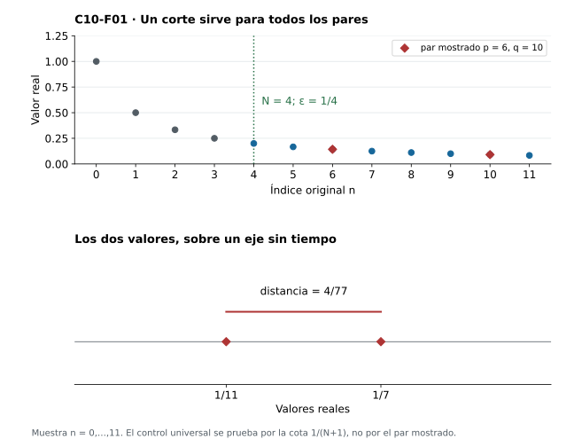
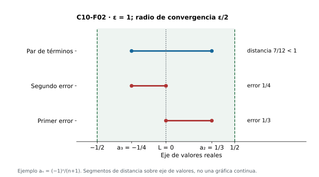
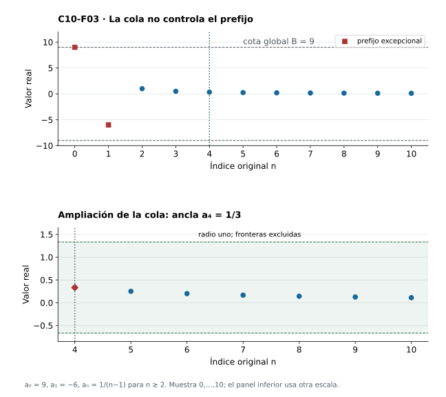
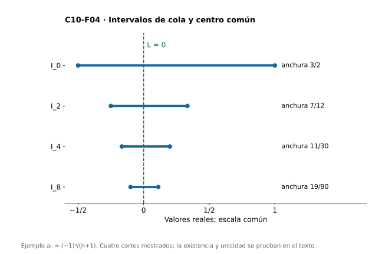
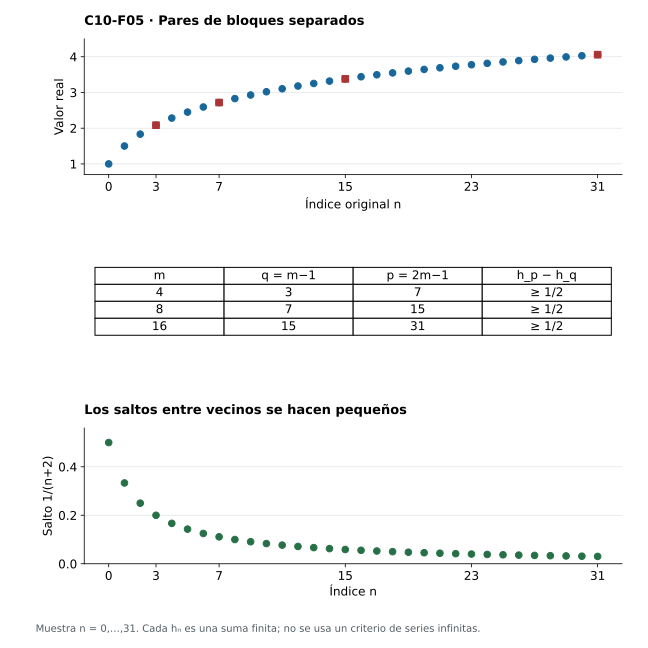
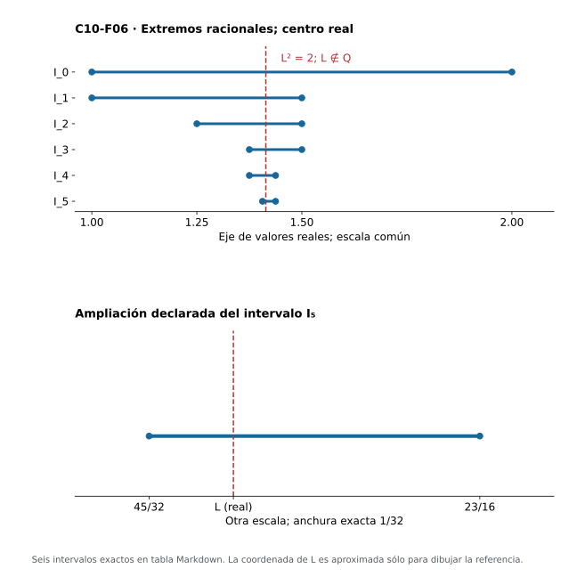
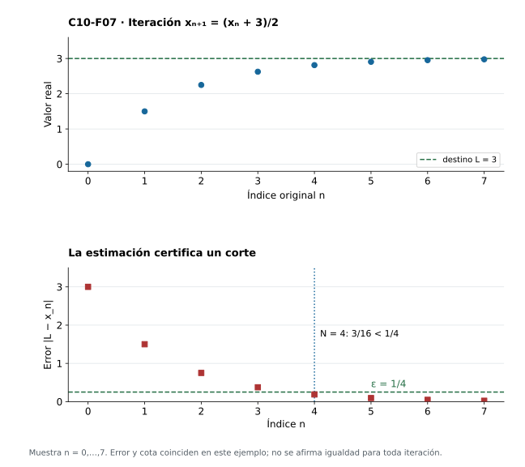

Capítulo 10 — Cauchy: converger sin conocer el destino
Índice del libro · Capítulo 10 · Ejercicios · Soluciones · Soluciones de microcontroles
Una lista de aproximaciones puede estabilizarse aunque aún no sepamos nombrar su destino. Queremos reconocer esa estabilización desde las relaciones entre los términos de una cola. La pregunta será cómo detectar convergencia sin conocer de antemano el límite: pasaremos de una referencia externa a un control interno de distancias.
Primero definiremos Cauchy con dos índices universales y probaremos qué conserva de la convergencia. Después recuperaremos acotación y construiremos un destino real usando completitud. Esa prueba principal sólo necesita las interfaces de C03 y C06, además de las bases de orden, valor absoluto y colas. Distinguiremos control de vecinos y control de todos los pares, y veremos por qué la misma distancia puede estabilizar una sucesión racional sin darle un destino racional. El capítulo termina con estimaciones de error e iteraciones reales construidas desde sumas finitas.
10.1. Comparar términos sin nombrar un límite
Para demostrar \(a_n\to L\) en C06 había que proponer un real \(L\) y controlar \(|a_n-L|\). Si sólo conocemos aproximaciones sucesivas, ese candidato puede estar oculto. ¿Cómo detectar convergencia sin conocer de antemano el destino? Podemos empezar preguntando si dos términos suficientemente tardíos se acercan entre sí, sea cual sea la distancia temporal entre sus índices.
Una sucesión real \(a:\mathbb N\to\mathbb R\) es de Cauchy si
\[ \forall\varepsilon>0\ \exists N\in\mathbb N\ \forall p,q\in\mathbb N: \quad p,q\ge N\ \Longrightarrow\ |a_p-a_q|<\varepsilon. \]
Usaremos siempre \(\mathbb N=\{0,1,2,\ldots\}\). El corte \(N\) se escoge después de recibir \(\varepsilon\), pero antes de los dos índices universales. No puede depender de \(p,q\). Se permite \(p=q\), caso en que la distancia es cero. Por simetría basta comprobar \(p>q\ge N\) y agregar el caso de igualdad; no basta comprobar \(p=q+1\).
El objeto controlado es toda la cola. Dos índices muy separados deben dar valores próximos tanto como dos vecinos. La definición no nombra un límite, no exige monotonía ni valores distintos y no afirma todavía que exista un real al que converger. Esa existencia será una obligación nueva.
Primer control explícito. En \(a_n=1/(n+1)\), si \(p,q\ge N\), ambos valores están en \((0,1/(N+1)]\), luego \(|a_p-a_q|\le1/(N+1)\). Para \(\varepsilon>0\), definamos \(N(\varepsilon)\) como el mínimo natural \(N\) con \(N+1>1/\varepsilon\). El conjunto es no vacío por arquimedianidad. Entonces \(1/(N+1)<\varepsilon\) y el mismo corte sirve para cualquier par posterior. No hemos usado cero como candidato para verificar Cauchy.
Las constantes también son de Cauchy con \(N=0\) para cualquier tolerancia. La alternancia \((-1)^n\) falla: después de cualquier corte, los índices \(N,N+1\) tienen distancia dos. Esto ya sugiere una negación de la definición, que escribiremos con cuidado en §10.5.
La definición garantiza un corte para cada precisión, pero no entrega por sí sola un algoritmo para encontrarlo. Una regla explícita como \(N(\varepsilon)\) en el ejemplo contiene información adicional útil para calcular. Conviene distinguir existencia lógica de un umbral, una fórmula que lo describe y un procedimiento efectivo que puede evaluarlo con los datos disponibles.

Antes de seguir
- ¿Qué objetos compara la condición de Cauchy?
- ¿Puede el corte \(N\) depender de los índices \(p,q\)?
- ¿Se permite \(p=q\) en la definición?
- ¿Basta controlar pares de vecinos?
- Da un corte suficiente de Cauchy para \(a_n=1/(n+1)\).
- ¿Qué corte sirve para una sucesión constante?
- ¿La condición de Cauchy exige monotonía?
- ¿La definición por sí sola proporciona un algoritmo para calcular los cortes?
10.2. Del destino común al control interno
Si todos los términos tardíos están cerca de un mismo destino, deberían estar cerca unos de otros. La desigualdad triangular convierte esa imagen en una prueba. Debemos repartir la tolerancia porque la distancia entre dos términos puede contener dos errores.
Toda sucesión real convergente es de Cauchy. Supongamos \(a_n\to L\). Fijemos \(\varepsilon>0\). Por convergencia existe \(N\) tal que \(|a_n-L|<\varepsilon/2\) para todo \(n\ge N\). Sean ahora \(p,q\ge N\). Entonces
\[ |a_p-a_q|\le |a_p-L|+|a_q-L| <\varepsilon/2+\varepsilon/2=\varepsilon. \]
El mismo corte de convergencia controla ambos errores. La prueba usa sólo la noción de límite y la desigualdad triangular; no gasta completitud. Tampoco necesita una fórmula del término general. Si contamos con un corte que garantiza radio \(\varepsilon/2\) alrededor de \(L\), ese corte es suficiente para Cauchy con tolerancia \(\varepsilon\).
El radio y el diámetro deben distinguirse. Una ventana de radio \(\varepsilon\) alrededor de \(L\) sólo da, por este argumento, distancia menor que \(2\varepsilon\) entre términos. Para obtener distancia menor que \(\varepsilon\) conviene usar una ventana de radio \(\varepsilon/2\). En sentido inverso, una cola con distancias menores que \(\varepsilon\) cabe en la ventana de radio \(\varepsilon\) alrededor de cualquier término de esa cola, pero eso no identifica todavía un centro común para todas las precisiones.
Como primer uso, \(a_n=(-1)^n/(n+1)\) converge a cero por la estimación \(|a_n|=1/(n+1)\) de C06, luego es de Cauchy aunque alterne de signo. También podemos verificarlo sin nombrar el destino: si \(p,q\ge N\), entonces \(|a_p-a_q|\le1/(p+1)+1/(q+1)\le2/(N+1)\). El mínimo natural con \(N+1>2/\varepsilon\) proporciona un corte suficiente. Aquí el control por un intervalo de valores cuesta dos recíprocos, mientras que en la sucesión positiva de §10.1 bastaba uno.
Hemos probado una implicación. Su recíproca no debe esconderse en la intuición de que los términos «se juntan»: todavía hay que construir un real que los reciba. Primero recuperaremos acotación y después veremos cómo interviene completitud.

Antes de seguir
- ¿Qué tolerancia de convergencia se usa para probar Cauchy con tolerancia \(\varepsilon\)?
- Escribe la desigualdad triangular que une \(a_p,a_q\) con el límite \(L\).
- ¿Por qué el mismo corte controla ambos errores?
- ¿Interviene completitud en convergente implica Cauchy?
- ¿Qué distancia máxima garantiza por estimación una ventana abierta de radio \(r\)?
- Da un corte directo para \(a_n=(-1)^n/(n+1)\) con tolerancia \(\varepsilon\).
- ¿Tener signos alternantes contradice convergencia?
- ¿La implicación ya demostrada permite concluir Cauchy implica convergente?
10.3. Encerrar una cola y recuperar la acotación
El control de Cauchy no acota explícitamente cada término respecto de cero. Podemos convertirlo en una cota usando un término de referencia que la propia cola determina.
Toda sucesión de Cauchy es acotada. Aplicamos la definición con tolerancia uno y obtenemos un corte \(N_0\). Al fijar uno de los dos índices en \(N_0\), para todo \(n\ge N_0\) tenemos \(|a_n-a_{N_0}|<1\). Por desigualdad triangular, \(|a_n|<|a_{N_0}|+1\). Si \(N_0=0\), esta cota controla todos los términos. Si \(N_0>0\), tomamos
\[ B=\max\{|a_{N_0}|+1,|a_0|,\ldots,|a_{N_0-1}|\}. \]
El conjunto del máximo es finito y no vacío; \(B\) controla también el prefijo. Así \(|a_n|\le B\) para todo índice. La acotación necesita una sola tolerancia de Cauchy y no usa completitud. La recíproca es falsa: \((-1)^n\) permanece entre menos uno y uno y sigue teniendo pares separados por dos.
La acotación permite ahora representar toda cola por un intervalo real. Definamos \(T_N=\{a_n:n\ge N\}\), \(\ell_N=\inf T_N\), \(u_N=\sup T_N\) e \(I_N=[\ell_N,u_N]\). Las colas son no vacías porque contienen \(a_N\), y son acotadas por lo recién probado. Aquí sí interviene completitud, al asegurar sus extremos reales. Esta construcción coincide con la vista en C09, pero su existencia y las propiedades necesarias se justifican aquí para conservar los prerrequisitos C03/C06.
Como \(T_{N+1}\subseteq T_N\), \(\ell_N\le\ell_{N+1}\) y \(u_{N+1}\le u_N\). Los intervalos están encajados. Puede haber extremos no alcanzados por los términos: para \(1/(n+1)\), el extremo inferior de cada intervalo es cero, aunque ningún término valga cero.
La condición de Cauchy fuerza anchura pequeña. Fijemos \(\eta>0\) y un corte \(N_0\) desde el cual todas las distancias sean menores que \(\eta\). Para \(N\ge N_0\) y cualquier \(y\in T_N\), cada \(x\in T_N\) cumple \(x-y\le|x-y|<\eta\). Por tanto \(y+\eta\) es cota superior de \(T_N\), y \(u_N\le y+\eta\). Esta desigualdad vale para todos los \(y\), luego \(u_N-\eta\) es cota inferior de \(T_N\) y \(u_N-\eta\le\ell_N\). En consecuencia,
\[ 0\le u_N-\ell_N\le\eta\qquad(N\ge N_0). \]
La desigualdad final puede ser no estricta, porque supremos e ínfimos pueden no alcanzarse. Para hacer la anchura menor que una precisión \(\varepsilon\), aplicaremos este argumento con \(\eta=\varepsilon/2\). La estimación no selecciona un máximo y un mínimo de cola inexistentes; compara cotas para todos los valores.

Antes de seguir
- ¿Qué tolerancia fija basta para recuperar acotación de una sucesión de Cauchy?
- ¿Qué término se toma como ancla de la cola?
- ¿Qué cota de \(|a_n|\) se obtiene para \(n\ge N_0\)?
- ¿Cómo se trata el prefijo si \(N_0=0\)?
- ¿Acotada implica Cauchy?
- ¿Por qué existen los extremos reales de \(T_N\)?
- Si todas las distancias de una cola son menores que \(\eta\), ¿qué cota se obtiene para su anchura?
- ¿Qué tolerancia de Cauchy garantiza anchura estrictamente menor que \(\varepsilon\) por esa cota?
10.4. La completitud construye el destino
Tenemos intervalos de cola encajados con anchuras arbitrariamente pequeñas. Falta un real común a todos ellos. La completitud convierte este control interno en existencia de un destino.
Mapa de la prueba. Formaremos el conjunto de los extremos inferiores; construiremos su supremo \(L\); probaremos que cada extremo superior lo acota; finalmente usaremos el ancho de una cola para controlar todos sus términos. El punto delicado es comparar extremos de cortes diferentes: no basta conocer \(\ell_N\le u_N\) para el mismo \(N\).
Sea \(a\) de Cauchy y usemos los intervalos de §10.3. El conjunto \(E=\{\ell_N:N\in\mathbb N\}\) contiene \(\ell_0\) y está acotado superiormente por la cota global \(B\). Por completitud existe el real \(L=\sup E\). Cada \(\ell_N\le L\).
Para cualquier par de cortes \(M,N\), tomemos \(r=\max\{M,N\}\). El término \(a_r\) pertenece a ambas colas, de modo que \(\ell_M\le a_r\le u_N\). Por tanto \(u_N\) acota superiormente todos los elementos de \(E\), y la minimalidad del supremo da \(L\le u_N\). Como \(N\) era arbitrario,
\[ \ell_N\le L\le u_N\qquad\text{para todo }N. \]
Éste es el paso de existencia que el control de distancias no proporcionaba: el centro común es un real gracias a la propiedad del supremo. Ninguna sucesión de candidatos a límite fue escogida, ni usamos convergencia monótona o Bolzano–Weierstrass.
Ahora fijemos \(\varepsilon>0\). Cauchy con tolerancia \(\varepsilon/2\) produce un corte \(N\) cuyo intervalo tiene anchura \(u_N-\ell_N\le\varepsilon/2\). Para cualquier \(n\ge N\), tanto \(a_n\) como \(L\) pertenecen a \(I_N\), luego
\[ |a_n-L|\le u_N-\ell_N\le\varepsilon/2<\varepsilon. \]
Hemos probado \(a_n\to L\) desde la definición. Si hubiera otro real \(L'\) en todos los intervalos, para cualquier \(\varepsilon>0\) su distancia a \(L\) sería a lo sumo la anchura de una cola adecuada y, por tanto, menor que \(\varepsilon\). La mitad de una supuesta distancia positiva daría contradicción. Así el punto común es único; la unicidad del límite también sigue de C06.
Junto con §10.2 queda demostrado el criterio de Cauchy en \(\mathbb R\):
\[ (a_n)\text{ converge a algún real}\quad\Longleftrightarrow\quad (a_n)\text{ es de Cauchy}. \]
Como primer uso, una sucesión real cuyas colas tienen distancias arbitrariamente pequeñas ya tiene un destino, aunque sus datos no permitan adivinarlo. El criterio demuestra existencia; para calcular ese destino o controlar un error concreto necesitaremos información adicional, como la que desarrollaremos en §10.8.
El retorno geométrico es preciso: Cauchy estrecha intervalos y completitud asegura un real en su intersección. En \(\mathbb Q\) pueden estrecharse del mismo modo sin contener un centro racional. La distancia y el conjunto en que se exige vivir al destino desempeñan funciones distintas.

Antes de seguir
- ¿Cómo se define el candidato \(L\) de la prueba principal?
- ¿Qué término compara \(\ell_M\) con \(u_N\) cuando los cortes son distintos?
- ¿Por qué \(L\le u_N\) para cada \(N\)?
- ¿Dónde interviene completitud además de la existencia de extremos de cola?
- ¿Por qué \(|a_n-L|\) queda acotada por la anchura para \(n\ge N\)?
- ¿Qué prueba la unicidad del real común a todos los intervalos?
- ¿Necesita la prueba principal Bolzano–Weierstrass?
- Enuncia el criterio de Cauchy con su codominio.
10.5. Negar Cauchy: encontrar pares separados
El criterio ofrece un método para demostrar que una sucesión real no converge: basta encontrar una tolerancia que ninguna cola pueda satisfacer. La negación completa es
\[ \exists\varepsilon_0>0\ \forall N\in\mathbb N\ \exists p,q\ge N: \quad |a_p-a_q|\ge\varepsilon_0. \]
La tolerancia \(\varepsilon_0\) queda fija antes del corte adversario. Los testigos pueden depender de \(N\). La igualdad pertenece a la negación porque la definición original exige desigualdad estricta. Si se permitiera una tolerancia positiva diferente en cada cola, no estaríamos negando Cauchy: incluso \(1/(n+1)\) tiene términos distintos después de cualquier corte.
En \((-1)^n\) sirven \(\varepsilon_0=1\) y \(p=N,q=N+1\). En \(a_n=n\), los mismos índices dan distancia uno y vuelven a impedir Cauchy. El primer ejemplo es acotado y el segundo no; el argumento pareado funciona en ambos.
Hay un error más sutil: confundir Cauchy con \(|a_{n+1}-a_n|\to0\). Cauchy sí implica esa condición: recibido \(\varepsilon\), su corte controla los pares \((n+1,n)\) para todo \(n\ge N\). La vuelta es falsa porque una separación pequeña repetida muchas veces puede producir una distancia grande.
Para verlo sin usar teoría de series, definamos las sumas finitas \(h_n=\sum_{j=1}^{n+1}1/j\). Cada \(h_n\) es un real obtenido por una suma con finitos sumandos. Su salto es \(h_{n+1}-h_n=1/(n+2)\) y tiende a cero. Sin embargo, para cada entero \(m\ge1\),
\[ h_{2m-1}-h_{m-1}=\sum_{j=m+1}^{2m}\frac1j \ge m\frac1{2m}=\frac12. \]
Después de cualquier corte \(N\), tomamos \(m=N+1\). Ambos índices \(m-1\) y \(2m-1\) están después del corte y su distancia es al menos \(1/2\). La tolerancia fija \(\varepsilon_0=1/2\) prueba que \(h\) no es de Cauchy y, por el criterio, no converge en \(\mathbb R\). No necesitamos dar un significado a una suma infinita ni aplicar un criterio del capítulo siguiente.
El contraejemplo también explica por qué controlar sólo un número fijo de vecinos es insuficiente. Para cada desplazamiento fijo \(r\), la diferencia \(h_{n+r}-h_n\) tiene \(r\) sumandos y es a lo sumo \(r/(n+2)\), que tiende a cero. Cauchy exige un corte válido aunque la separación entre índices crezca sin una cota fija.
Una gráfica temporal de muestra finita puede mostrar los saltos cada vez menores y aun ocultar la separación de bloques muy tardíos. La prueba debe elegir pares después de cualquier corte; esa libertad del adversario es la que el gráfico por sí solo no resuelve.

Antes de seguir
- ¿Qué orden de cuantificadores expresa no ser de Cauchy?
- ¿Puede la tolerancia de la negación cambiar con \(N\)?
- ¿Por qué la negación usa \(\ge\) y no sólo \(>\)?
- Da testigos para negar Cauchy en \(a_n=n\).
- ¿Qué ocurre con \(|a_{n+1}-a_n|\) si \(a\) es de Cauchy?
- ¿Cuál es el salto de \(h_n=\sum_{j=1}^{n+1}1/j\)?
- ¿Qué pares de índices muestran que \(h\) no es de Cauchy?
- ¿El contraejemplo de \(h\) necesita una suma infinita?
10.6. Conservar el control al operar
El criterio permite transportar las reglas de convergencia de C06. También conviene reconocer cómo actúan directamente sobre las distancias: así sabremos qué hipótesis usa cada operación sin necesitar los destinos.
Si \(a,b\) son de Cauchy, para \(\varepsilon>0\) elegimos sus cortes con tolerancia \(\varepsilon/2\) y tomamos el máximo. Para todo par posterior,
\[ |(a_p+b_p)-(a_q+b_q)| \le|a_p-a_q|+|b_p-b_q|<\varepsilon. \]
Por ello \(a+b\) es de Cauchy. La misma estimación con una resta prueba que \(a-b\) lo es. Una traslación constante no cambia distancias. Para multiplicar por un real \(c\ne0\), basta usar tolerancia \(\varepsilon/|c|\) en \(a\); si \(c=0\), el producto es constante cero y sirve corte cero.
El producto necesita cotas. Por §10.3, fijemos \(A,B\ge0\) con \(|a_n|\le A\), \(|b_n|\le B\) en todos los índices. Descomponer en dos errores da
\[ |a_pb_p-a_qb_q| \le |a_p|\,|b_p-b_q|+|b_q|\,|a_p-a_q|. \]
Elegimos cortes de \(b\) con tolerancia \(\varepsilon/[2(A+1)]\) y de \(a\) con tolerancia \(\varepsilon/[2(B+1)]\). Para pares posteriores al máximo, la cota es menor que \(\varepsilon\), porque \(A/(A+1)<1\) y \(B/(B+1)<1\). Los denominadores añadidos evitan dividir por una cota cero. El producto es de Cauchy sin hipótesis de signo sobre los términos.
Los recíprocos necesitan distancia a cero. Si \(|a_n|\ge c>0\) para \(n\ge N_0\), los recíprocos de esa cola están definidos y
\[ \left|\frac1{a_p}-\frac1{a_q}\right| =\frac{|a_p-a_q|}{|a_pa_q|}\le\frac{|a_p-a_q|}{c^2}. \]
Usamos el corte de Cauchy de \(a\) para tolerancia \(c^2\varepsilon\) y lo combinamos con \(N_0\). Si algún término previo es cero, no existe una sucesión de recíprocos en todos los índices: podemos reindexar esa cola o asignar al prefijo valores reales arbitrarios. Si todos los términos son no nulos, la sucesión completa de recíprocos es de Cauchy. La condición «ningún término es cero» por sí sola no basta: \(a_n=1/(n+1)\) es de Cauchy y no nula, pero sus recíprocos \(n+1\) no lo son.
También el valor absoluto conserva Cauchy, porque \(\big||a_p|-|a_q|\big|\le|a_p-a_q|\). Si \(a\) es de Cauchy y \(b_n-a_n\to0\), entonces la diferencia es de Cauchy por §10.2 y la regla de suma hace a \(b\) de Cauchy. Por C06 comparten límite cuando la diferencia tiende a cero. El signo oscilante de una perturbación no impide su desaparición.
Finalmente, cambiar finitos términos o suprimir un prefijo conserva Cauchy: después del último índice cambiado las distancias son las mismas; al reindexar una cola sólo se trasladan cortes. Estas reglas separan cambios del objeto completo de cambios en su comportamiento tardío.
Antes de seguir
- ¿Qué corte sirve para probar que la suma de dos sucesiones de Cauchy es de Cauchy?
- ¿Qué sucede al multiplicar por cero?
- ¿Por qué el argumento del producto necesita acotación?
- ¿Por qué se usan denominadores \(A+1\) y \(B+1\) al escoger tolerancias para el producto?
- ¿Qué hipótesis de una cola permite controlar recíprocos?
- ¿Ser no nula término a término basta para que una sucesión de Cauchy tenga recíprocos de Cauchy?
- ¿Qué desigualdad demuestra que el valor absoluto conserva Cauchy?
- ¿Cambiar finitos términos conserva Cauchy?
10.7. La distancia permanece; el codominio cambia
Una sucesión con valores racionales puede verse como \(q:\mathbb N\to\mathbb Q\) y, mediante la inclusión canónica \(\iota:\mathbb Q\to\mathbb R\), como \(\iota\circ q:\mathbb N\to\mathbb R\). Los valores numéricos transportados y sus distancias coinciden. Pero «converge en \(\mathbb Q\)» exige un destino racional y «converge en \(\mathbb R\)» permite un destino real. Cambiar codominio cambia el contrato de convergencia, aunque no cambie los números de cada evaluación.
Construiremos un ejemplo desde el control interno, sin presuponer que ya existe una raíz real de dos. Primero recordemos un argumento algebraico: no hay un racional cuyo cuadrado sea dos. Si \(r=s/t\) con enteros coprimos y \(t>0\) cumpliera \(r^2=2\), tendríamos \(s^2=2t^2\). Un entero con cuadrado par es par, de modo que \(s=2v\). Sustituyendo, \(t^2=2v^2\), por lo que \(t\) también sería par, contradiciendo coprimalidad.
Partimos del intervalo racional \([l_0,u_0]=[1,2]\). Dado \([l_n,u_n]\), formamos el punto medio racional \(t_n=(l_n+u_n)/2\). Si \(t_n^2<2\), ponemos \(l_{n+1}=t_n,u_{n+1}=u_n\); si \(t_n^2>2\), ponemos \(l_{n+1}=l_n,u_{n+1}=t_n\). La igualdad es imposible por el argumento anterior. La recursión determina extremos racionales y conserva
\[ 1\le l_n<u_n\le2,\qquad l_n^2<2<u_n^2, \qquad u_n-l_n=2^{-n}. \]
Los intervalos están encajados y la anchura se divide por dos en cada paso. Si \(p,q\ge N\), ambos extremos inferiores \(l_p,l_q\) están dentro de \([l_N,u_N]\), por lo que \(|l_p-l_q|\le2^{-N}\). La desigualdad \(2^N\ge N+1\), probada por inducción, y arquimedianidad permiten escoger \(N\) con \(2^{-N}<\varepsilon\). Así la sucesión de extremos inferiores es de Cauchy. Lo mismo vale para los superiores.
Por el criterio real recién demostrado, \(l_n\to L\in\mathbb R\). Como \(u_n-l_n=2^{-n}\to0\), las reglas de C06 dan \(u_n\to L\). Las cotas \(1\le l_n<u_n\le2\) implican \(1\le L\le2\). La regla del producto y conservación del orden aplicada a \(l_n^2<2<u_n^2\) dan \(L^2\le2\) y \(L^2\ge2\). En consecuencia \(L^2=2\). Hemos construido el real positivo que se denota \(\sqrt2\); es único, porque si \(x,y>0\) y \(x^2=y^2\), entonces \((x-y)(x+y)=0\) con \(x+y>0\), luego \(x=y\).
Ese límite no es racional. Si la sucesión racional \(l\) convergiera a algún \(r\in\mathbb Q\), al incluirla en \(\mathbb R\) convergería a \(\iota(r)\). La unicidad del límite real obligaría \(\iota(r)=L\), lo cual contradice que ningún racional tiene cuadrado dos. La sucesión es de Cauchy en distancia usual y no tiene límite en \(\mathbb Q\).
La diferencia con la recta real está ahora probada: Cauchy proporciona coherencia de una cola; completitud del codominio proporciona el destino dentro de él. Llamaremos secuencialmente completo, para la distancia usual en un subconjunto de \(\mathbb R\), a un conjunto en el que toda sucesión de Cauchy con valores en ese conjunto converge a un elemento suyo. Hemos probado que \(\mathbb R\) lo es y que \(\mathbb Q\) no lo es. No estamos construyendo otro modelo de los reales por clases de sucesiones; identificamos una propiedad del modelo ya disponible.
Raíces generales: reunir una herramienta ya demostrada. El ejercicio 30 de C07 y su solución construyeron la raíz de cualquier parámetro positivo. Recuperemos aquí el argumento para que la herramienta quede disponible en el manuscrito, sin depender de que el lector haya resuelto ese ejercicio. Sea \(\rho>0\), tomemos \(x_0=\rho+1\) y definamos \(x_{n+1}=(x_n+\rho/x_n)/2\). La positividad y las identidades finitas \[x_{n+1}^2-\rho=\frac{(x_n^2-\rho)^2}{4x_n^2},\qquad x_n-x_{n+1}=\frac{x_n^2-\rho}{2x_n}\] conservan \(x_n^2>\rho\) y hacen decrecer estrictamente la sucesión, porque \(x_0^2-\rho=\rho^2+\rho+1>0\). Con \(m=\min\{1,\rho\}>0\), se tiene \(m^2\le\rho\); por ello \(x_n\le m\) contradiría \(x_n^2>\rho\). C07 da un límite \(L\ge m>0\). Las reglas de C06 permiten pasar al límite en la recurrencia, incluido el cociente, y dan \(L=(L+\rho/L)/2\), luego \(L^2=\rho\).
Si \(u,v>0\) tienen ese cuadrado, \((u-v)(u+v)=0\) y \(u+v>0\) fuerzan \(u=v\). Para \(\rho=0\), la única raíz no negativa es cero. Así queda definida para todo \(\rho\ge0\) una única raíz no negativa \(\sqrt\rho\). Su orden también está acreditado: si \(0\le\rho\le\sigma\) pero \(\sqrt\rho>\sqrt\sigma\), la comparación de cuadrados no negativos daría \(\rho>\sigma\), contradicción. Este resultado sólo usa monotonía, completitud y álgebra de límites anteriores; no continuidad de funciones, valor intermedio ni derivadas. La continuidad de la función raíz se probará después en su lugar correspondiente.

| n | Extremo inferior racional | Extremo superior racional | Anchura |
|---|---|---|---|
| 0 | 1 | 2 | 1 |
| 1 | 1 | 3/2 | 1/2 |
| 2 | 5/4 | 3/2 | 1/4 |
| 3 | 11/8 | 3/2 | 1/8 |
| 4 | 11/8 | 23/16 | 1/16 |
| 5 | 45/32 | 23/16 | 1/32 |
Antes de seguir
- ¿Qué cambia al pasar de \(q:\mathbb N\to\mathbb Q\) a \(\iota\circ q:\mathbb N\to\mathbb R\)?
- ¿Por qué el punto medio racional de la bisección no tiene cuadrado dos?
- ¿Cuál es la anchura del intervalo tras \(n\) bisecciones?
- ¿Qué controla \(|l_p-l_q|\) cuando \(p,q\ge N\)?
- ¿Cómo se demuestra que los dos extremos tienen el mismo límite real?
- ¿Por qué el límite real construido cumple \(L^2=2\)?
- ¿Por qué la sucesión racional no converge en \(\mathbb Q\)?
- ¿Qué significa completitud secuencial para un subconjunto con distancia usual?
10.8. Estimar el error antes de conocer la respuesta
Los saltos que tienden a cero no bastan. Los saltos dominados por una progresión geométrica sí permiten controlar cualquier acumulación finita de errores. Supongamos que \(C\ge0\), \(0<\rho<1\) y
\[ |a_{n+1}-a_n|\le C\rho^n\qquad(n\in\mathbb N). \]
Si \(p>q\), la identidad telescópica y la desigualdad triangular finita dan
\[ |a_p-a_q|\le C\sum_{j=q}^{p-1}\rho^j =\frac{C\rho^q(1-\rho^{p-q})}{1-\rho} \le\frac{C\rho^q}{1-\rho}. \]
La identidad de suma finita se verifica multiplicando por \(1-\rho\) y cancelando términos consecutivos. No usamos una suma infinita. Para comprobar \(\rho^N\to0\) sin herramientas posteriores, escribamos \(\rho^{-1}=1+t\) con \(t>0\). Por inducción, \((1+t)^N\ge1+Nt\), luego \(0<\rho^N\le1/(1+Nt)\to0\) por arquimedianidad. Si \(C=0\), todos los saltos son cero y la sucesión es constante. Si \(C>0\), recibida \(\varepsilon>0\) podemos escoger \(N\) con \(C\rho^N/(1-\rho)<\varepsilon\). La estimación controla todo par posterior; por simetría incluye \(p<q\) y el caso de igualdad tiene distancia cero. La sucesión es de Cauchy y tiene un límite real \(L\).
También obtenemos un error verificable. Para \(q\) fijo, hacemos tender \(p\) a infinito en la cota anterior. Por C06, \(|a_p-a_q|\to|L-a_q|\); la conservación del orden produce
\[ |L-a_q|\le\frac{C\rho^q}{1-\rho}. \]
Si necesitamos error estrictamente menor que \(\varepsilon\), escogemos \(q\) con el lado derecho menor que \(\varepsilon\). Existencia del límite y estimación del error son obligaciones distintas, ambas cerradas ahora. La cota puede ser conservadora; no afirmamos que sea el error exacto ni que el corte elegido sea mínimo.
Una iteración real sin destino supuesto. Sea \(F:\mathbb R\to\mathbb R\) y supongamos que para algún \(0<\rho<1\) se cumple \(|F(x)-F(y)|\le\rho|x-y|\) para todos los reales \(x,y\). Fijado \(x_0\), definimos \(x_{n+1}=F(x_n)\). La recursión existe porque \(F\) es total en \(\mathbb R\). Con \(D=|x_1-x_0|\), una inducción da \(|x_{n+1}-x_n|\le D\rho^n\). Por el resultado anterior \(x_n\to L\) y \(|L-x_n|\le D\rho^n/(1-\rho)\).
Debemos comprobar que el destino satisface la ecuación de la iteración. Para todo \(n\),
\[ |F(L)-L|\le |F(L)-F(x_n)|+|x_{n+1}-L| \le\rho|L-x_n|+|x_{n+1}-L|. \]
El lado derecho tiende a cero, por lo que la distancia fija del izquierdo es cero y \(F(L)=L\). Si \(M\) fuera otro punto fijo, \(|L-M|=|F(L)-F(M)|\le\rho|L-M|\), luego \((1-\rho)|L-M|\le0\) y \(L=M\). Esta prueba no invoca continuidad general ni un teorema de espacios métricos: desarrolla la consecuencia de una desigualdad concreta sobre \(\mathbb R\).
Por ejemplo, \(F(x)=(x+3)/2\) satisface la condición con \(\rho=1/2\). Desde cualquier valor inicial la iteración converge al único punto fijo, que al resolver \(L=(L+3)/2\) resulta ser tres. Desde \(x_0=0\), \(D=3/2\) y la cota es \(|L-x_n|\le3\,2^{-n}\). Aquí primero demostramos existencia y error y después identificamos el destino. La misma estrategia sirve cuando no hay una fórmula cómoda para los términos.
Quedan autorizados el criterio real de Cauchy, la negación por pares y el control de errores por acumulación geométrica finita. La arquitectura central ha sido proximidad interna, acotación, intervalos de cola y existencia por completitud. A partir de ella podemos estudiar nuevas sucesiones sin adivinar primero su límite.

Antes de seguir
- ¿Qué controla una cota geométrica de saltos que no controla el mero salto tendiendo a cero?
- Escribe la cota de pares si \(|a_{n+1}-a_n|\le C\rho^n\) con \(0<\rho<1\).
- ¿Qué caso especial ocurre si \(C=0\)?
- ¿Cómo se justifica aquí que \(\rho^N\to0\)?
- ¿Qué cota de error al límite se obtiene?
- ¿Qué número inicia la estimación de saltos en una iteración contractiva?
- ¿Cómo se prueba \(F(L)=L\) sin invocar continuidad general?
- ¿Qué garantiza unicidad de un punto fijo con factor \(\rho<1\)?
Índice del libro · Capítulo 10 · Ejercicios · Soluciones · Soluciones de microcontroles